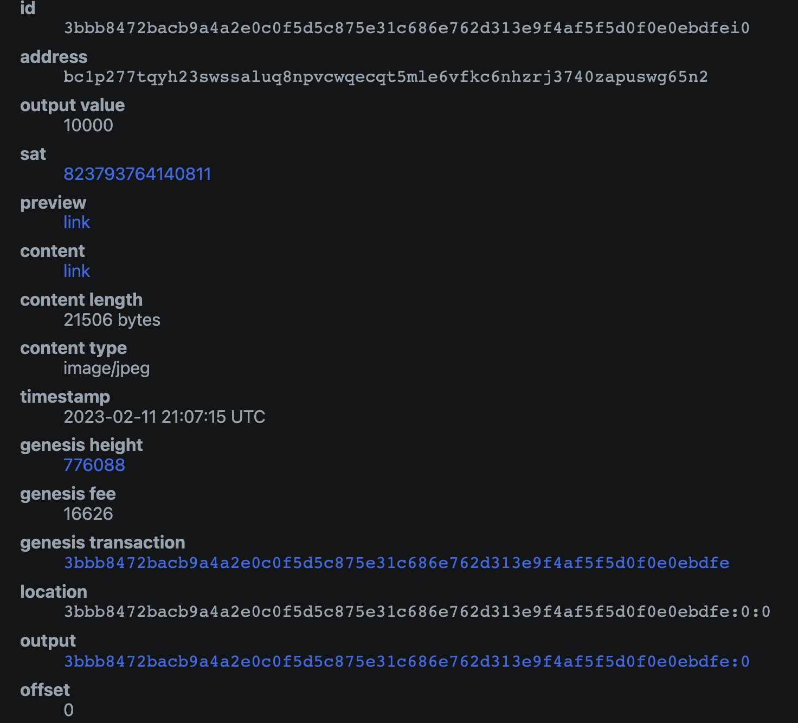
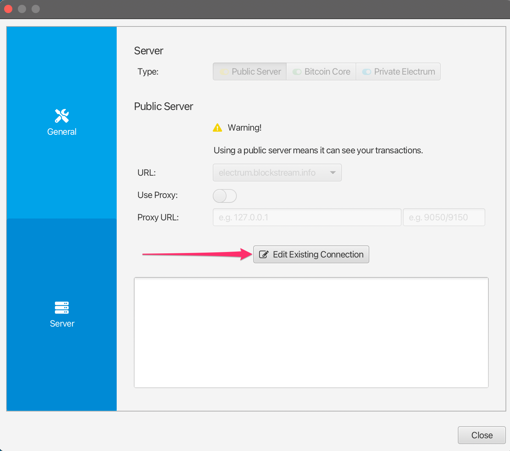

Collectionner des inscriptions et des ordinals avec le portefeuille Sparrow
Users who cannot or have not yet set up the ord wallet can receive inscriptions and ordinals with alternative groestlcoin wallets, as long as they are very careful about how they spend from that wallet.
Ce guide fournit des instructions de base pour créer un portefeuille avec Sparrow Wallet qui soit compatible avec ord et qui puisse être importé dans ord par la suite
⚠️⚠️ Avertissement!! ⚠️⚠️
En règle générale, si vous adoptez cette approche, vous devriez utiliser ce portefeuille avec le logiciel Sparrow uniquement en tant que portefeuille de réception.
Do not spend any gros from this wallet unless you are sure you know what you are doing. You could very easily inadvertently lose access to your ordinals and inscriptions if you don't heed this warning.
Configuration du portefeuille et réception
Téléchargez Sparrow Wallet à partir de la page de téléchargement correspondant à votre système d’exploitation.
Sélectionnez File -> New Wallet et créez un nouveau portefeuille appelé ord.

Modifiez le Script Type (type de script) en choisissant Taproot (P2TR) et sélectionnez l’option New or Imported Software Wallet (Portefeuille de logiciel nouveau ou importé).

Sélectionnez Use 12 Words (utiliser 12 mots), puis cliquez sur Generate New (Créer nouveau). Laissez la passphrase (phrase secrète) vide.

Une nouvelle phrase de récupération BIP39 contenant 12 mots sera générée pour vous. Notez-la dans un endroit sûr, car elle vous servira de référence pour accéder à votre portefeuille. Ne communiquez ou ne montrez JAMAIS cette phrase de récupération à qui que ce soit.
Une fois que vous avez noté la phrase de récupération, cliquez sur Confirm Backup (confirmer la sauvegarde).

Saisissez à nouveau la phrase de récupération que vous avez notée, puis cliquez sur Create Keystore (Créer le Keystore).

Cliquez sur Import Keystore.(Importer le Keystore).

Cliquez sur Apply (Appliquer). Ajoutez un mot de passe pour le portefeuille si vous le souhaitez.

Vous disposez maintenant d’un portefeuille compatible avec ord, qui peut être importé dans ord à l’aide de la phrase de récupération BIP39. Pour recevoir des ordinals ou des inscriptions, cliquez sur l’onglet Receive (recevoir) et copiez une nouvelle adresse.
Chaque fois que vous voulez recevoir, vous devriez utiliser une toute nouvelle adresse et ne pas réutiliser les adresses existantes.
Note that groestlcoin is different to some other blockchain wallets, in that this wallet can generate an unlimited number of new addresses. You can generate a new address by clicking on the Get Next Address button. You can see all of your addresses in the Addresses tab of the app.
Vous pouvez ajouter une étiquette à chaque adresse, afin de garder une trace de sa fonction ou de son utilisation.

Validation / visualisation des inscriptions reçues
Une fois que vous avez reçu une inscription, vous verrez une nouvelle transaction dans l’onglet Transactions de Sparrow, ainsi qu’un nouvel UTXO dans l’onglet UTXOs.
Initially this transaction may have an "Unconfirmed" status, and you will need to wait for it to be mined into a groestlcoin block before it is fully received.

Pour suivre le statut de votre transaction, vous pouvez faire un clic droit dessus, sélectionner Copy Transaction ID (Copier l’identifiant de la transaction) et ensuite coller cet identifiant de transaction dans mempool.space.

Once the transaction has confirmed, you can validate and view your inscription by heading over to the UTXOs tab, finding the UTXO you want to check, right-clicking on the Output and selecting Copy Transaction Output. This transaction output id can then be pasted into the ordinals.groestlcoin.org search.
Gel des UTXOs
Comme expliqué ci-dessus, chacune de vos inscriptions est stockée dans une sortie de transaction non dépensée (UTXO). Vous devez faire très attention à ne pas dépenser accidentellement vos inscriptions. Une façon d’éviter cela est de geler l’UTXO correspondant.
Pour ce faire, allez dans l’onglet UTXOs, trouvez l’UTXO que vous voulez geler, faites un clic droit sur Output et sélectionnez Freeze UTXO (congeler UTXO).
Cet UTXO (Inscription) dans le portefeuille Sparrow ne pourra pas être dépensé jusqu’à ce que vous le dégeliez.
Importation dans le portefeuille ord
For details on setting up Groestlcoin Core and the ord wallet check out the Inscriptions Guide
Lors de la configuration d’ord, au lieu d’exécuter ord wallet create pour créer un nouveau portefeuille, vous pouvez importer votre portefeuille existant en utilisant ord wallet restore "BIP39 SEED PHRASE" avec la phrase de récupération que vous avez générée dans le portefeuille Sparrow.
There is currently a bug which causes an imported wallet to not be automatically rescanned against the blockchain. To work around this you will need to manually trigger a rescan using the groestlcoin core cli: groestlcoin-cli -rpcwallet=ord rescanblockchain 767430
Vous pouvez ensuite vérifier les inscriptions de votre portefeuille en utilisant ord wallet inscriptions
Notez que si vous avez précédemment créé un portefeuille avec ord, vous aurez alors déjà un portefeuille avec le nom par défaut, et vous devrez donner un nom différent à votre portefeuille importé. Vous pouvez utiliser le paramètre --wallet dans toutes les commandes ord pour référencer un portefeuille différent, par exemple :
ord --wallet ord_from_sparrow wallet restore "BIP39 SEED PHRASE"
ord --wallet ord_from_sparrow wallet inscriptions
groestlcoin-cli -rpcwallet=ord_from_sparrow rescanblockchain 767430
Envoyer des inscriptions avec le portefeuille Sparrow
⚠️⚠️ Avertissement ⚠️⚠️
While it is highly recommended that you set up a groestlcoin core node and run the ord software, there are certain limited ways you can send inscriptions out of Sparrow Wallet in a safe way. Please note that this is not recommended, and you should only do this if you fully understand what you are doing.
Le fait d’utiliser le logiciel ord supprimera une grande partie de la complexité que nous décrivons ici, car il est capable de gérer automatiquement et en toute sécurité l’envoi d’inscriptions de manière simple.
⚠️⚠️ Avertissement supplémentaire ⚠️⚠️
Don't use your sparrow inscriptions wallet to do general sends of non-inscription groestlcoin. You can setup a separate wallet in sparrow if you need to do normal groestlcoin transactions, and keep your inscriptions wallet separate.
Groestlcoin's UTXO model
Before sending any transaction it's important that you have a good mental model for groestlcoin's Unspent Transaction Output (UTXO) system. The way Groestlcoin works is fundamentally different to many other blockchains such as Ethereum. In Ethereum generally you have a single address in which you store ETH, and you cannot differentiate between any of the ETH - it is just all a single value of the total amount in that address. Groestlcoin works very differently in that we generate a new address in the wallet for each receive, and every time you receive gros to an address in your wallet you are creating a new UTXO. Each UTXO can be seen and managed individually. You can select specific UTXO's which you want to spend, and you can choose not to spend certain UTXO's.
Some Groestlcoin wallets do not expose this level of detail, and they just show you a single summed up value of all the groestlcoin in your wallet. However, when sending inscriptions it is important that you use a wallet like Sparrow which allows for UTXO control.
Inspecter son inscription avant de l’envoyer
Like we have previously described inscriptions are inscribed onto gros, and gros are stored within UTXOs. UTXO's are a collection of gros with some particular value of the number of gros (the output value). Usually (but not always) the inscription will be inscribed on the first gro in the UTXO.
When inspecting your inscription before sending the main thing you will want to check is which gro in the UTXO your inscription is inscribed on.
To do this, you can follow the Validating / Viewing Received Inscriptions described above to find the inscription page for your inscription on ordinals.groestlcoin.org
Vous y trouverez des métadonnées sur votre inscription qui ressemblent à ce qui suit :

Il y a plusieurs points importants à vérifier à ce stade :
- L’identifiant
outputcorrespond à l’identifiant de l’UTXO que vous allez envoyer. - The
offsetof the inscription is0(this means that the inscription is located on the first gro in the UTXO) - the
output_valuehas enough gros to cover the transaction fee (postage) for sending the transaction. The exact amount you will need depends on the fee rate you will select for the transaction
Si tous les points ci-dessus s’appliquent à votre inscription, vous pouvez l’envoyer en toute sécurité en utilisant la méthode ci-dessous.
⚠️⚠️ Be very careful sending your inscription particularly if the offset value is not 0. It is not recommended to use this method if that is the case, as doing so you could accidentally send your inscription to a groestlcoin miner unless you know what you are doing.
Envoyer votre inscription
Pour envoyer une inscription, allez dans l’onglet UTXOs et recherchez l’UTXO que vous avez validé précédemment comme contenant votre inscription.
Si vous avez précédemment gelé cet UTXO, vous devrez faire un clic droit dessus et le dégeler.
Sélectionnez l’UTXO que vous souhaitez envoyer et assurez-vous que c’est le seul UTXO sélectionné. Vous devriez voir UTXOs 1/1 dans l’interface. Une fois que vous êtes absolument sûr d’avoir sélectionné le bon UTXO, vous pouvez cliquer sur Send Selected (envoyer la sélection).

Vous verrez alors apparaître l’interface de construction de transactions. Il y a quelques points que vous devez vérifier ici pour vous assurer que cet envoi est sûr :
- La transaction ne doit avoir que 1 input (entrée), et celle-ci doit être l’UTXO avec l’étiquette que vous voulez envoyer.
- La transaction ne doit avoir que 1 output (sortie), qui est l’adresse/l’étiquette où vous voulez envoyer l’inscription
Si votre transaction semble différente, par exemple si elle a plusieurs entrées ou plusieurs sorties, il se peut que le transfert de votre inscription ne soit pas sûr et que vous deviez renoncer à l’envoyer jusqu’à ce que vous en sachiez plus ou jusqu’à ce que vous puissiez l’importer dans le portefeuille ord.
Vous devez fixer des frais de transaction appropriés. Sparrow en recommande généralement des raisonnables, mais vous pouvez également consulter mempool.space pour voir quel taux de frais est recommandé pour l’envoi d’une transaction.
Vous devriez ajouter une étiquette pour l’adresse du destinataire ; une étiquette telle que alice address for inscription #123 (adresse Alice pour inscription #123) serait idéal.
Une fois que vous avez vérifié que la transaction est sûre en utilisant les critères mentionnés ci-dessus, et que vous êtes confiant pour l’envoyer, vous pouvez cliquer sur Create Transaction (créer transaction).

Ici, vous pouvez à nouveau vérifier que votre transaction semble sûre et, une fois que vous êtes sûr de vous, vous pouvez cliquer sur Finalize Transaction for Signing (Finaliser la transaction pour la signer).

Ici, vous pouvez tout vérifier une troisième fois avant de cliquer sur Sign (Signer).

And then actually you get very very last chance to check everything before hitting Broadcast Transaction. Once you broadcast the transaction it is sent to the groestlcoin network, and starts being propagated into the mempool.

Si vous souhaitez suivre l’état de votre transaction, vous pouvez copier Transaction Id (Txid) (l’identifiant de transaction) et le coller dans mempool.space
Once the transaction has confirmed you can check the inscription page on ordinals.groestlcoin.org to validate that it has moved to the new output location and address.
Résolution des problèmes
Le portefeuille Sparrow n’affiche pas une transaction/UTXO, mais je peux la voir sur mempool.space !
Make sure that your wallet is connected to a groestlcoin node. To validate this, head into the Preferences-> Server settings, and click Edit Existing Connection.

De là, vous pouvez sélectionner un nœud et cliquer sur Test Connection (Tester connexion) pour valider que Sparrow est capable de se connecter avec succès.